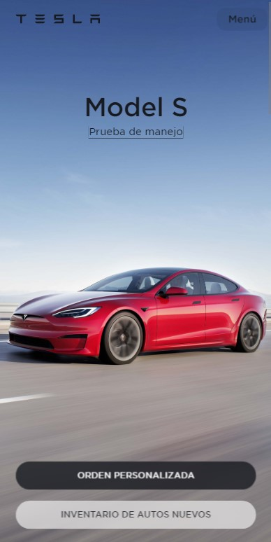
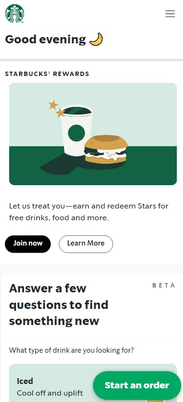

Visual Hierarchy
TESLA
tesla.com The tesla page seems to me to adequately illustrate how you should use Visual Hierarchy since throughout the page we find important elements where we generally put our attention when viewing, starting with the main content that is the cars, a menu in a position for the user, clear and concise titles and a button to generate a sale.
Contrast
NEW YORK TIMES
newyorktimes.com
A page that many of us know for its typography is the New York Times. I think this page was one of the first that came to mind when I thought of contrast, it has key elements in it such as typography, which allows even small texts to remain clear compared to sans-serif fonts. On the other hand, the typical colors white, black and a bit of gray allow us to make it easy to read and remind us of those times when news was read on paper.
White Space and Clean Design
STARKBUCKS
starbucks.com With the Starbucks page, we can notice that it has a specific number of elements with which to transmit the message, without being excessive. There are spaces between the elements and the images provide a lot of information, so the page is not swamped with text.